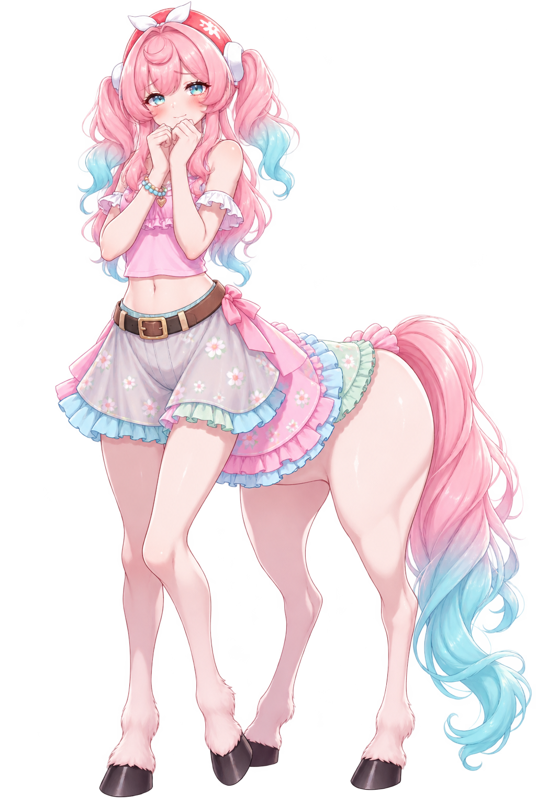
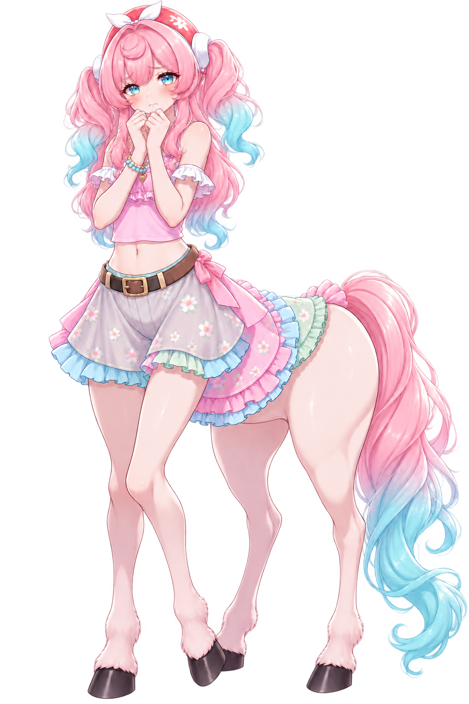

"Oh, olá! Um viajante! Seja muito bem-vindo às Naturelands. Posso te ajudar a encontrar algum caminho seguro pela floresta?"

×

Caminho Bloqueado
"Oh, me desculpe! As raízes deste caminho ainda estão crescendo e as fadinhas estão arrumando a terra... É muito perigoso ir por ali agora. Você pode voltar mais tarde? Prometo que estará lindo!"